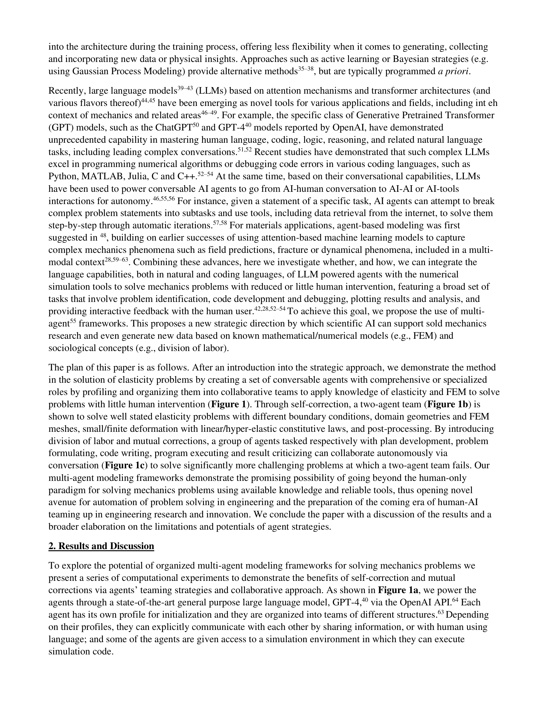

Figure 1
LLM 기반 멀티 에이전트 시스템을 활용하여 고체역학 문제를 자율적으로 풀 수 있는 물리 기반 생성형 AI 플랫폼 MechAgents를 제안한다. GPT-4를 기반으로 한 AI 에이전트들이 탄성 문제를 유한요소법(FEM)으로 정식화하고, Python/FEniCS 코드를 작성, 실행, 디버깅하며, 결과를 분석하는 전 과정을 자율적인 대화를 통해 수행한다. 2-에이전트 팀의 자기 수정(self-correction)과 다중 에이전트 그룹의 상호 수정(mutual correction)이라는 두 가지 조직 구조를 비교하며, 분업(division of labor)이 복잡한 공학 문제 해결에 미치는 효과를 실증한다.
| 구성 요소 | 세부 내용 |
|---|---|
| LLM | GPT-4 (gpt-4-0613), 8,192 토큰 컨텍스트 |
| 프레임워크 | AutoGen (Microsoft 오픈소스) |
| 시뮬레이션 도구 | FEniCS (Python 기반 FEM 패키지) |
2-에이전트 팀:
다중 에이전트 그룹 (6+1 에이전트):
MechAgents는 LLM 멀티 에이전트가 전통적인 공학 시뮬레이션 워크플로우를 자율적으로 수행할 수 있음을 보여준 선구적 연구다. 특히 동일한 LLM을 사용하면서도 조직 구조(2-에이전트 vs 다중 에이전트)에 따라 성능이 크게 달라진다는 발견은, AI 시스템 설계에서 "에이전트 간 상호작용 구조"의 중요성을 시사한다. Critic 에이전트가 물리적 직관에 기반하여 코드 에러 없는 개념적 오류를 식별하는 사례는 인상적이다. 다만 2D 탄성 문제라는 제한된 범위, 정량적 평가의 부재, GPT-4에 대한 강한 의존성은 한계로 남아 있으며, 이 연구가 제시한 비전이 실제로 복잡한 공학 문제에까지 확장되려면 상당한 추가 연구가 필요하다. 그럼에도 AI for Science에서 "LLM이 수치 시뮬레이션 도구를 자율적으로 운용한다"는 패러다임을 개척한 중요한 기여다.
| 항목 | 점수 (1-5) |
|---|---|
| Novelty | 4 |
| Technical Soundness | 3 |
| Significance | 4 |
| Overall | 3.7 |
총평: 멀티 에이전트로 유한요소 역학 문제를 자동화한 선구적 연구로 에이전트 협업 설계의 가능성을 보였으나 평가 범위 확대가 필요하다.